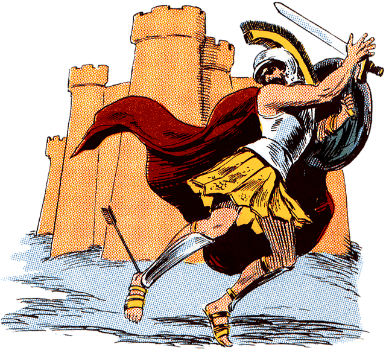
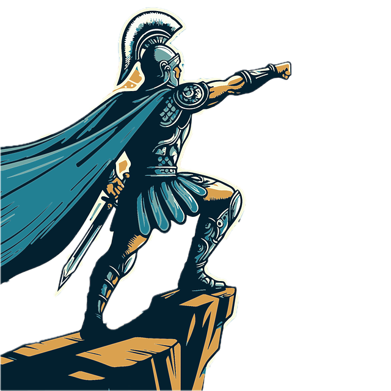

The Hero Complex
Character Traits

The traits of heroes mostly consist of bravery, courageousness, honestly, selflessness, and determination. Most of these traits are present constantly in their respective stories, making highlighted appearances during conflict, however it is not so confirmed if these traits have proportionality with the trait of wisdom. Selflessness and risk-taking can also be a result of carelessness, which is why modern authors now seem to establish a trend of highlighting the weaknesses of their protagonists, so that their characters could be considered great without seeming arrogant or brazen
Famous Figures
When one thinks of a hero, they tend to think of Superman or
Spiderman, and while they are very good heros, the ones who set
the foundations for heroism are the ones written from older times.
Some famous heros in mythology and fairytale include:
What Happens to Them After?

Fate and destiny play a big part in what happens after with these heros. In the European or celtic tales, most of these heroes have happy ending due to their good deeds. In Greek and Roman myths, most are subjected to their not-so-happy destinies that have been determined. Some are subjected to grief or unfairness, others simply die or get punished by the Gods after they slip up after their victory.